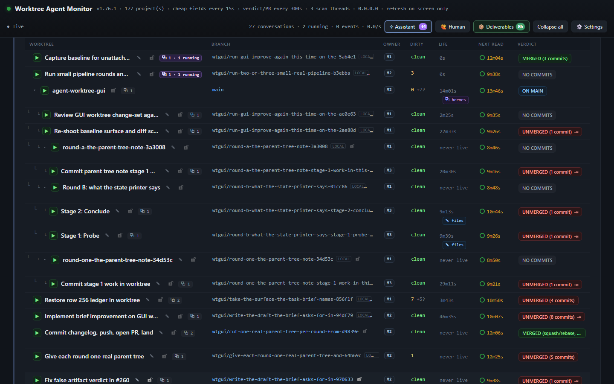
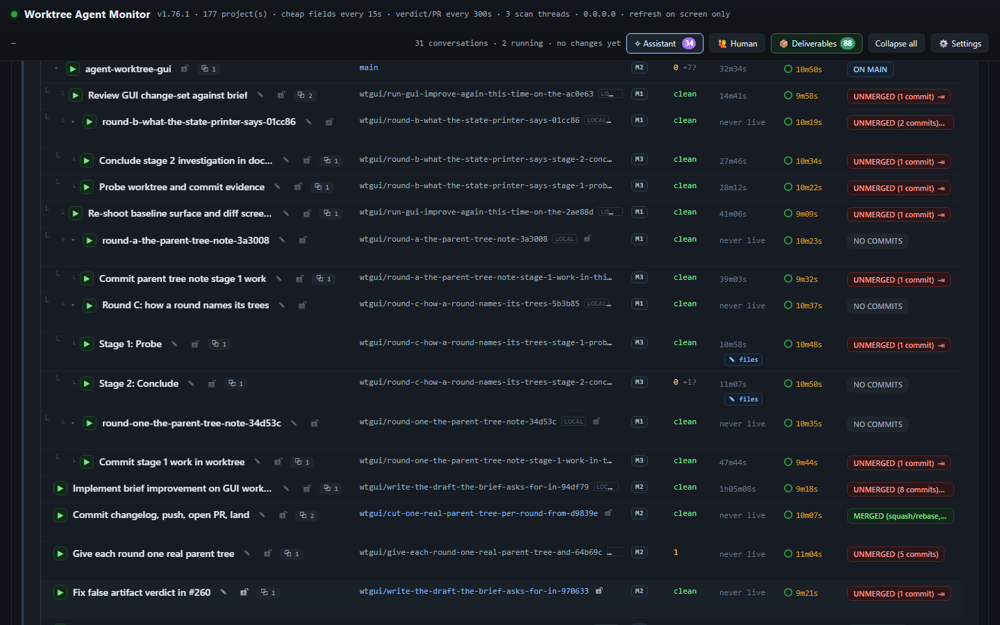
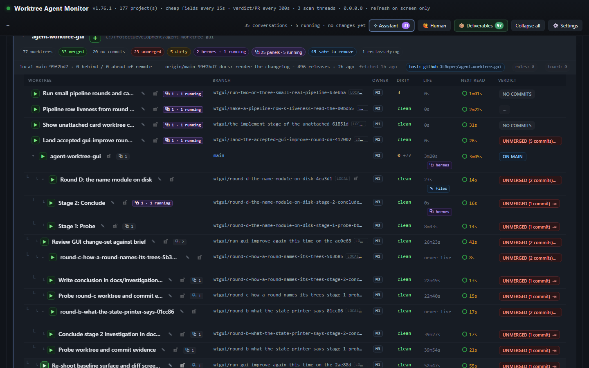

Pipeline rounds on the parent-tree model
agent-worktree-gui, measured at origin/main 99f2bd7 (1.76.1) on the live panel at 127.0.0.1:7331, 2026-11-09. Three rounds of the investigate pipeline on assistant-3 with settings.spawn = auto. All times UTC. Round D's landing turn later merged its work as PR #649 (17e66cd3, 1.76.3); the report is written on that main.
The answer
All three rounds completed on the landed parent-tree model. Each cut one parent tree from origin/main, named for the task as a whole, then cut one child per stage from the parent's branch with the display name Stage N: <stage>. Each picked both stage commits onto the parent tree and wrote an assembly record with verified: true. The chart draws the group the model describes: the parent row named for the task, its two stage children indented under it, each child reading Stage X: ....
Four findings showed up beside that result. A pipeline row filed with an existing worktree never cuts a parent tree; it runs in that tree (row 50 committed to the project checkout). A one-stage round never assembles, because assemblePipelineRound refuses fewer than two entries while assemblyPlanOf offers a one-stage plan when the round has a parent tree (row 52 is parked on exactly that). The assistant's own agent can close a pipeline row before the driver's assembly (row 51). And the chart does not paint the round's own display names by default; the captures lay them on the board's per-tree name map.
Round D's work landed after its capture: the assistant's landing turn pushed the parent branch and merged PR #649 at 12:25:38Z, so main carries the two stage commits (ea66e5a1, 570a0a11) and the 1.76.3 bump (17e66cd3). Rounds B and C were not landed.
How the rounds were run
Each row was filed through the panel's own queue route in one POST: action: add, order: 1, project: agent-worktree-gui, pipeline: investigate, stage: probe, and no worktree. The missing worktree is load-bearing. treeLookup answers needed only when the row records no tree, and only then does the driver ask the assistant to cut the round's parent tree (lib/task-pipeline-drive.js, "the three answers"). A row filed with a real worktree reuses it instead; finding 1 is that path.
curl -s -X POST -H "Content-Type: application/json" \
--data @round-add.json http://127.0.0.1:7331/api/assistant/queue
{"assistantId":"assistant-3","action":"add","order":1,"project":"agent-worktree-gui",
"title":"Round B: what the state printer says",
"detail":"The question is what node tools/pipeline-state.mjs --help prints. ...",
"pipeline":"investigate","stage":"probe"}
assistant-3 carried settings.spawn = auto for every round. Its own agent turns were switched off (enabled = false) while the rounds ran, because an enabled agent had closed a pipeline row before the driver's assembly on the first attempt (finding 3); the queue sweep that drives pipelines runs outside that switch. enabled was restored to true after the last round.
Each stage is a real Hermes run in its own tree, started by the panel, one stage at a time. The captures are the board's own page in Chromium at a 1440 x 900 viewport. The chart reads a row's shown name from the reader's per-tree name map (wtgui.treenames in localStorage) before the directory, so the round's display values were laid on that map for each shot; without it the rows read their directory names (finding 4).
The three rounds
| round | row | stages | filed | done | wall clock | assembly | verified |
|---|---|---|---|---|---|---|---|
| Round B | 53 | investigate/probe#1, investigate/conclude#1 | 2026-11-09 11:32:47.338Z | 2026-11-09 11:39:47.997Z | 7m 00s | 6214af3165752ad6 on wtgui/round-b-what-the-state-printer-says-01cc86 | true |
| Round C | 54 | investigate/probe#1, investigate/conclude#1 | 2026-11-09 11:48:52.845Z | 2026-11-09 12:00:41.908Z | 11m 49s | 132354c1b216c535 on wtgui/round-c-how-a-round-names-its-trees-5b3b85 | true |
| Round D | 55 | investigate/probe#1, investigate/conclude#1 | 2026-11-09 12:07:11.462Z | 2026-11-09 12:13:08.747Z | 5m 57s | 7b4a51f2f0aced0a on wtgui/round-d-the-name-module-on-disk-4ea3d1 | true |
Wall clock is doneAt minus createdAt on the queue row. The stage clock is not the round's: enteredAt is restamped at every stage, so time in stage is not the round's length (docs/task-pipeline.md).
Round B: what the state printer says (row 53)
pipeline investigate, 2 stage(s), filed 2026-11-09 11:32:47.338Z, done 2026-11-09 11:39:47.997Z, wall clock 7m 00s. The row's own reason: pipeline investigate is over at conclude - its artifact "investigation" (investigation/1, kind unstated) is not a PR to land, so the row settles on the stage's own verdict

What the chart draws
| row | display name | depth | hangs under | branch |
|---|---|---|---|---|
| Round B: what the state printer says | 1 | the project checkout row (main) | wtgui/round-b-what-the-state-printer-says-01cc86 | |
| Stage 1: Probe | 2 | the parent row | wtgui/round-b-what-the-state-printer-says-stage-1-probe-112593 | |
| Stage 2: Conclude | 2 | the parent row | wtgui/round-b-what-the-state-printer-says-stage-2-conclude-530d9e |
Read from the DOM at capture time: each child carried is-child and data-parent-key naming the parent row's key, with data-depth="2"; the parent carried data-parent-key naming the project checkout's row, with data-depth="1". That is the model's one group per round: main -> the round's parent tree -> its stage children.
The stage runs
| stage run | status | entered / settled | commit | artifact | thread / job |
|---|---|---|---|---|---|
investigate/probe#1 | done | 2026-11-09 11:32:58.635Z to 2026-11-09 11:36:07.327Z 3m 08s | d104dbf219f4 | probe-evidence at ledger/investigate/probe.md - present truepin sha256 124729819c478c4f | wtgui-find-out-what-is-actually-be-c669471cb2a5ed |
investigate/conclude#1 | done | 2026-11-09 11:36:35.854Z to 2026-11-09 11:39:47.997Z 3m 12s | 848cf12023ed | investigation at docs/investigation.md - present truepin sha256 ec52d9d5b02ee7d4 | wtgui-write-the-conclusion-down-in-59975a30fda38f |
The assembly
The driver picked every stage commit onto the round's parent tree, in visit order, from the frozen base 99f2bd777a2a:
d104dbf219f4 picked as 3170d2c69198 (probe, visit 1) 848cf12023ed picked as 6214af316575 (conclude, visit 1)
Assembly 6214af3165752ad641d5df95a60c481c3f8d90d1 on wtgui/round-b-what-the-state-printer-says-01cc86, base 99f2bd777a2a24d1aedd903e9c4b24a4d9520c36, verified true, skipped []. The parent tree's files were read back at that commit and hash to the pins the stage runs recorded:
| stage | artifact path | pin blobSha256 | read at | result |
|---|---|---|---|---|
| probe | ledger/investigate/probe.md | 124729819c478c4f | 6214af3165752ad6.. | match |
| conclude | docs/investigation.md | ec52d9d5b02ee7d4 | 6214af3165752ad6.. | match |
tools/pipeline-state.mjs 53 --assistant assistant-3
row 53 · assistant-3 · done
title Round B: what the state printer says
where project agent-worktree-gui · worktree <repo>/.worktrees/round-b-what-the-state-printer-says-01cc86
reason pipeline investigate is over at conclude - its artifact "investigation" (investigation/1, kind unstated) is not a PR to land, so the row settles on the stage's own verdict
bundle ~/.wag/state/pipeline-bundle.json
run investigate · conclude (2 of 2) · 31m 27s in stage
stage Conclude · visit 1 · entered 2026-11-09T11:36:07.327Z
facts via H-01 · route sha256:bdf3268aaf15277b... · crossings H-01=1 · start asked 2026-11-09T11:36:35.854Z
round parent wtgui/round-b-what-the-state-printer-says-01cc86 · sha 99f2bd777a2a · tree <repo>/.worktrees/round-b-what-the-state-printer-says-01cc86
tree <repo>/.worktrees/round-b-what-the-state-printer-says-stage-2-conclude-530d9e (stageRun) on wtgui/round-b-what-the-state-printer-says-stage-2-conclude-530d9e
landing pipelineRun.tree <repo>/.worktrees/round-b-what-the-state-printer-says-01cc86 on wtgui/round-b-what-the-state-printer-says-01cc86
trees
probe <repo>/.worktrees/round-b-what-the-state-printer-says-stage-1-probe-112593 on wtgui/round-b-what-the-state-printer-says-stage-1-probe-112593 cut 2026-11-09T11:32:58.529Z
conclude <repo>/.worktrees/round-b-what-the-state-printer-says-stage-2-conclude-530d9e on wtgui/round-b-what-the-state-printer-says-stage-2-conclude-530d9e cut 2026-11-09T11:36:35.751Z
stages
investigate/probe#1
done · 2026-11-09T11:32:58.635Z -> 2026-11-09T11:36:07.327Z · commit d104dbf219f4 · artifact probe-evidence ledger/investigate/probe.md present
thread wtgui-find-out-what-is-actually-be-c66947 · job 1cb2a5ed
decision moved investigate · probe settled - the run finished
investigate/conclude#1
done · 2026-11-09T11:36:35.854Z -> 2026-11-09T11:39:47.997Z · commit 848cf12023ed · artifact investigation docs/investigation.md present
thread wtgui-write-the-conclusion-down-in-59975a · job 30fda38f
decision moved investigate · conclude settled - the run finished
stage owes
artifact investigation at docs/investigation.md · writer worker - present
assembly wtgui/round-b-what-the-state-printer-says-01cc86 at 6214af316575 · base 99f2bd777a2a · 2 stage(s) · verified true
next step
the row is done at 2026-11-09T11:39:47.997Z: pipeline investigate is over at conclude - its artifact "investigation" (investigation/1, kind unstated) is not a PR to land, so the row settles on the stage's own verdict. The record is history; nothing is owed.
Round C: how a round names its trees (row 54)
pipeline investigate, 2 stage(s), filed 2026-11-09 11:48:52.845Z, done 2026-11-09 12:00:41.908Z, wall clock 11m 49s. The row's own reason: pipeline investigate is over at conclude - its artifact "investigation" (investigation/1, kind unstated) is not a PR to land, so the row settles on the stage's own verdict

What the chart draws
| row | display name | depth | hangs under | branch |
|---|---|---|---|---|
| Round C: how a round names its trees | 1 | the project checkout row (main) | wtgui/round-c-how-a-round-names-its-trees-5b3b85 | |
| Stage 1: Probe | 2 | the parent row | wtgui/round-c-how-a-round-names-its-trees-stage-1-probe-294b21 | |
| Stage 2: Conclude | 2 | the parent row | wtgui/round-c-how-a-round-names-its-trees-stage-2-conclude-7ace4b |
Read from the DOM at capture time: each child carried is-child and data-parent-key naming the parent row's key, with data-depth="2"; the parent carried data-parent-key naming the project checkout's row, with data-depth="1". That is the model's one group per round: main -> the round's parent tree -> its stage children.
The stage runs
| stage run | status | entered / settled | commit | artifact | thread / job |
|---|---|---|---|---|---|
investigate/probe#1 | done | 2026-11-09 11:49:00.917Z to 2026-11-09 11:51:28.206Z 2m 27s | c327d3d7655a | probe-evidence at ledger/investigate/probe.md - present truepin sha256 379b579a04c18251 | wtgui-find-out-what-is-actually-be-373943feb065a7 |
investigate/conclude#1 | done | 2026-11-09 11:51:48.938Z to 2026-11-09 12:00:41.908Z 8m 52s | d69f6bba3e1c | investigation at docs/investigation.md - present truepin sha256 1bfc97d238aaa504 | wtgui-write-the-conclusion-down-in-968728fa9b22df |
The assembly
The driver picked every stage commit onto the round's parent tree, in visit order, from the frozen base 99f2bd777a2a:
c327d3d7655a picked as 8fe96b95b6fb (probe, visit 1) d69f6bba3e1c picked as 132354c1b216 (conclude, visit 1)
Assembly 132354c1b216c5352216134c1ba2cdcafbb422f5 on wtgui/round-c-how-a-round-names-its-trees-5b3b85, base 99f2bd777a2a24d1aedd903e9c4b24a4d9520c36, verified true, skipped []. The parent tree's files were read back at that commit and hash to the pins the stage runs recorded:
| stage | artifact path | pin blobSha256 | read at | result |
|---|---|---|---|---|
| probe | ledger/investigate/probe.md | 379b579a04c18251 | 132354c1b216c535.. | match |
| conclude | docs/investigation.md | 1bfc97d238aaa504 | 132354c1b216c535.. | match |
tools/pipeline-state.mjs 54 --assistant assistant-3
row 54 · assistant-3 · done
title Round C: how a round names its trees
where project agent-worktree-gui · worktree <repo>/.worktrees/round-c-how-a-round-names-its-trees-5b3b85
reason pipeline investigate is over at conclude - its artifact "investigation" (investigation/1, kind unstated) is not a PR to land, so the row settles on the stage's own verdict
bundle ~/.wag/state/pipeline-bundle.json
run investigate · conclude (2 of 2) · 16m 07s in stage
stage Conclude · visit 1 · entered 2026-11-09T11:51:28.206Z
facts via H-01 · route sha256:bdf3268aaf15277b... · crossings H-01=1 · start asked 2026-11-09T11:51:48.938Z
round parent wtgui/round-c-how-a-round-names-its-trees-5b3b85 · sha 99f2bd777a2a · tree <repo>/.worktrees/round-c-how-a-round-names-its-trees-5b3b85
tree <repo>/.worktrees/round-c-how-a-round-names-its-trees-stage-2-conclude-7ace4b (stageRun) on wtgui/round-c-how-a-round-names-its-trees-stage-2-conclude-7ace4b
landing pipelineRun.tree <repo>/.worktrees/round-c-how-a-round-names-its-trees-5b3b85 on wtgui/round-c-how-a-round-names-its-trees-5b3b85
trees
probe <repo>/.worktrees/round-c-how-a-round-names-its-trees-stage-1-probe-294b21 on wtgui/round-c-how-a-round-names-its-trees-stage-1-probe-294b21 cut 2026-11-09T11:49:00.854Z
conclude <repo>/.worktrees/round-c-how-a-round-names-its-trees-stage-2-conclude-7ace4b on wtgui/round-c-how-a-round-names-its-trees-stage-2-conclude-7ace4b cut 2026-11-09T11:51:48.867Z
stages
investigate/probe#1
done · 2026-11-09T11:49:00.917Z -> 2026-11-09T11:51:28.206Z · commit c327d3d7655a · artifact probe-evidence ledger/investigate/probe.md present
thread wtgui-find-out-what-is-actually-be-373943 · job feb065a7
decision moved investigate · probe settled - the run finished
investigate/conclude#1
done · 2026-11-09T11:51:48.938Z -> 2026-11-09T12:00:41.908Z · commit d69f6bba3e1c · artifact investigation docs/investigation.md present
thread wtgui-write-the-conclusion-down-in-968728 · job fa9b22df
decision moved investigate · conclude settled - the run finished
stage owes
artifact investigation at docs/investigation.md · writer worker - present
assembly wtgui/round-c-how-a-round-names-its-trees-5b3b85 at 132354c1b216 · base 99f2bd777a2a · 2 stage(s) · verified true
next step
the row is done at 2026-11-09T12:00:41.908Z: pipeline investigate is over at conclude - its artifact "investigation" (investigation/1, kind unstated) is not a PR to land, so the row settles on the stage's own verdict. The record is history; nothing is owed.
Round D: the name module on disk (row 55)
pipeline investigate, 2 stage(s), filed 2026-11-09 12:07:11.462Z, done 2026-11-09 12:13:08.747Z, wall clock 5m 57s. The row's own reason: pipeline investigate is over at conclude - its artifact "investigation" (investigation/1, kind unstated) is not a PR to land, so the row settles on the stage's own verdict

What the chart draws
| row | display name | depth | hangs under | branch |
|---|---|---|---|---|
| Round D: the name module on disk | 1 | the project checkout row (main) | wtgui/round-d-the-name-module-on-disk-4ea3d1 | |
| Stage 1: Probe | 2 | the parent row | wtgui/round-d-the-name-module-on-disk-stage-1-probe-bb62d8 | |
| Stage 2: Conclude | 2 | the parent row | wtgui/round-d-the-name-module-on-disk-stage-2-conclude-13928c |
Read from the DOM at capture time: each child carried is-child and data-parent-key naming the parent row's key, with data-depth="2"; the parent carried data-parent-key naming the project checkout's row, with data-depth="1". That is the model's one group per round: main -> the round's parent tree -> its stage children.
The stage runs
| stage run | status | entered / settled | commit | artifact | thread / job |
|---|---|---|---|---|---|
investigate/probe#1 | done | 2026-11-09 12:07:44.442Z to 2026-11-09 12:10:19.872Z 2m 35s | 04d41cf2345e | probe-evidence at ledger/investigate/probe.md - present truepin sha256 7ddac3cd4c5e1234 | wtgui-find-out-what-is-actually-be-2cf08761b2d219 |
investigate/conclude#1 | done | 2026-11-09 12:10:25.522Z to 2026-11-09 12:13:08.747Z 2m 43s | 7643ae17a00b | investigation at docs/investigation.md - present truepin sha256 e92266a55d5fac6b | wtgui-write-the-conclusion-down-in-0606849644386a |
The assembly
The driver picked every stage commit onto the round's parent tree, in visit order, from the frozen base 99f2bd777a2a:
04d41cf2345e picked as c9f4edba4227 (probe, visit 1) 7643ae17a00b picked as 7b4a51f2f0ac (conclude, visit 1)
Assembly 7b4a51f2f0aced0aefc3ca26fdf6a7b58dcd1a64 on wtgui/round-d-the-name-module-on-disk-4ea3d1, base 99f2bd777a2a24d1aedd903e9c4b24a4d9520c36, verified true, skipped []. The parent tree's files were read back at that commit and hash to the pins the stage runs recorded:
| stage | artifact path | pin blobSha256 | read at | result |
|---|---|---|---|---|
| probe | ledger/investigate/probe.md | 7ddac3cd4c5e1234 | 7b4a51f2f0aced0a.. | match |
| conclude | docs/investigation.md | e92266a55d5fac6b | 7b4a51f2f0aced0a.. | match |
After the capture, with assistant-3 re-enabled, its landing turn merged stage 2's branch into the parent tree (1d80932, parents 7b4a51f and 7643ae1), bumped package.json to 1.76.3 (8a4c8824), pushed the parent branch and merged PR #649 at 12:25:38Z. Main's merge commit is 17e66cd3; the two stage commits on main are ea66e5a1 (probe) and 570a0a11 (conclude). The bump is the only difference between the assembly and the branch: git diff 7b4a51f HEAD is package.json's version line. The capture and the assembly record predate the landing.
tools/pipeline-state.mjs 55 --assistant assistant-3
row 55 · assistant-3 · done
title Round D: the name module on disk
where project agent-worktree-gui · worktree <repo>/.worktrees/round-d-the-name-module-on-disk-4ea3d1
reason pipeline investigate is over at conclude - its artifact "investigation" (investigation/1, kind unstated) is not a PR to land, so the row settles on the stage's own verdict
bundle ~/.wag/state/pipeline-bundle.json
run investigate · conclude (2 of 2) · 3m 51s in stage
stage Conclude · visit 1 · entered 2026-11-09T12:10:19.872Z
facts via H-01 · route sha256:bdf3268aaf15277b... · crossings H-01=1 · start asked 2026-11-09T12:10:25.522Z
round parent wtgui/round-d-the-name-module-on-disk-4ea3d1 · sha 99f2bd777a2a · tree <repo>/.worktrees/round-d-the-name-module-on-disk-4ea3d1
tree <repo>/.worktrees/round-d-the-name-module-on-disk-stage-2-conclude-13928c (stageRun) on wtgui/round-d-the-name-module-on-disk-stage-2-conclude-13928c
landing pipelineRun.tree <repo>/.worktrees/round-d-the-name-module-on-disk-4ea3d1 on wtgui/round-d-the-name-module-on-disk-4ea3d1
trees
probe <repo>/.worktrees/round-d-the-name-module-on-disk-stage-1-probe-bb62d8 on wtgui/round-d-the-name-module-on-disk-stage-1-probe-bb62d8 cut 2026-11-09T12:07:44.335Z
conclude <repo>/.worktrees/round-d-the-name-module-on-disk-stage-2-conclude-13928c on wtgui/round-d-the-name-module-on-disk-stage-2-conclude-13928c cut 2026-11-09T12:10:25.437Z
stages
investigate/probe#1
done · 2026-11-09T12:07:44.442Z -> 2026-11-09T12:10:19.872Z · commit 04d41cf2345e · artifact probe-evidence ledger/investigate/probe.md present
thread wtgui-find-out-what-is-actually-be-2cf087 · job 61b2d219
decision moved investigate · probe settled - the run finished
investigate/conclude#1
done · 2026-11-09T12:10:25.522Z -> 2026-11-09T12:13:08.747Z · commit 7643ae17a00b · artifact investigation docs/investigation.md present
thread wtgui-write-the-conclusion-down-in-060684 · job 9644386a
decision moved investigate · conclude settled - the run finished
stage owes
artifact investigation at docs/investigation.md · writer worker - present
assembly wtgui/round-d-the-name-module-on-disk-4ea3d1 at 7b4a51f2f0ac · base 99f2bd777a2a · 2 stage(s) · verified true
next step
the row is done at 2026-11-09T12:13:08.747Z: pipeline investigate is over at conclude - its artifact "investigation" (investigation/1, kind unstated) is not a PR to land, so the row settles on the stage's own verdict. The record is history; nothing is owed.
Edges the run exposed
Finding 1: a row filed with a worktree never gets a round (row 50)
The first row was filed with worktree set to the project checkout because the live-round checklist says a queue row names a real tree. That is the old model's rule, and it short-circuits the new one: treeLookup took task.worktree as the live tree (candidate 3), so the driver asked for no cut and wrote no round. The stage ran in the project checkout, and its worker committed 7f69985 on the checkout's main (one file, ledger/local/work.md). The commit was removed with git reset --soft HEAD~1 and the file deleted; the checkout reads 99f2bd7 with no staged change. The row's own record shows no round and a tree of the checkout. Fix direction: a pipeline row's first cut should ignore a seeded worktree when the row has no pipelineRun.round, or the queue's add form should not seed one for a pipeline.
Finding 2: a one-stage round never assembles (row 52)
A one-stage round (local) cut its parent tree and its child, and the stage settled done with commit 1bbfd16. The driver then asked for the assembly, because assemblyPlanOf offers a one-stage plan when the round has a parent tree (minimum = round.parentPath ? 1 : 2). The assistant's assembler returned null before doing anything: its first guard is if (!task || !run || !baseSha || entries.length < 2) return null;. No journal line, no park, no assembly: the row sat running with the next step "the pipeline is over and the assembly is owed". It was parked by hand at 11:32:09 with the reason on the row so it would stop fronting the queue.
The parent tree .worktrees/round-a-the-parent-tree-note-3a3008 is still at 99f2bd7; the stage's commit is only on the child branch. The three reported rounds use a two-stage pipeline, which is why they assemble. A one-stage pipeline cannot finish a round with a parent tree in this build.
tools/pipeline-state.mjs 52 --assistant assistant-3
row 52 · assistant-3 · parked
title Round A: the parent-tree note
where project agent-worktree-gui · worktree <repo>/.worktrees/round-a-the-parent-tree-note-stage-1-work-in-this-tree-0d58e1
hold manual since 2026-11-09T11:32:09.829Z
reason One-stage round: the assembly the driver asked for was refused by assemblePipelineRound (entries.length < 2) while assemblyPlanOf offers a one-stage plan when the round has a parent tree. The stage committed 1bbfd16 in its child tree; the parent tree is still at 99f2bd7. Parked by hand for the round report.
bundle ~/.wag/state/pipeline-bundle.json
run local · work (1 of 1) · 42m 48s in stage
stage Work in this tree · visit 1 · entered 2026-11-09T11:24:46.010Z
facts start asked 2026-11-09T11:24:58.027Z
round parent wtgui/round-a-the-parent-tree-note-3a3008 · sha 99f2bd777a2a · tree <repo>/.worktrees/round-a-the-parent-tree-note-3a3008
tree <repo>/.worktrees/round-a-the-parent-tree-note-stage-1-work-in-this-tree-0d58e1 (stageRun) on wtgui/round-a-the-parent-tree-note-stage-1-work-in-this-tree-0d58e1
landing pipelineRun.tree <repo>/.worktrees/round-a-the-parent-tree-note-3a3008 on wtgui/round-a-the-parent-tree-note-3a3008
trees
work <repo>/.worktrees/round-a-the-parent-tree-note-stage-1-work-in-this-tree-0d58e1 on wtgui/round-a-the-parent-tree-note-stage-1-work-in-this-tree-0d58e1 cut 2026-11-09T11:24:57.942Z
stages
local/work#1
done · 2026-11-09T11:24:58.027Z -> 2026-11-09T11:32:08.770Z · commit 1bbfd160104e · artifact work-commit ledger/local/work.md present
thread wtgui-do-the-work-in-this-tree-and-259c95 · job 08124be3
decision moved local · work settled - the run finished
stage owes
artifact work-commit at ledger/local/work.md · writer worker - present
next step
the row is parked: One-stage round: the assembly the driver asked for was refused by assemblePipelineRound (entries.length < 2) while assemblyPlanOf offers a one-stage plan when the round has a parent tree. The stage committed 1bbfd16 in its child tree; the parent tree is still at 99f2bd7. Parked by hand for the round report.
every other park is released by fixing the fact (write the artifact or verdict, repair the tree, fix the record) and then requeueing the row; the panel never releases a manual hold itself.
Finding 3: the assistant's own agent can close a pipeline row before its assembly (row 51)
The same one-stage shape, one row earlier, was closed by assistant-3 itself at 11:21:53 with a reason written in the agent's voice ("Round one work is committed in its stage tree: 443df82 ..."), and no assembly record. The driver had not written one because the assembler refuses one stage (finding 2); the agent's settle finished the row first, which is the race the enabled assistant adds on top. The three rounds were run with that agent switched off so the driver owned every row. A board that leaves it enabled can close a pipeline row that still owes its assembly.
tools/pipeline-state.mjs 51 --assistant assistant-3
row 51 · assistant-3 · done
title Round one: the parent-tree note
where project agent-worktree-gui · worktree <repo>/.worktrees/round-one-the-parent-tree-note-stage-1-work-in-this-tree-8700b1
reason Round one work is committed in its stage tree: 443df82 round one: the parent-tree note, one file ledger/local/work.md (44 bytes), nothing pushed and no PR, exactly as the row detail says. The work stage settled done at 11:20:22Z and the local pipeline has only that stage, so the row is complete.
bundle ~/.wag/state/pipeline-bundle.json
run local · work (1 of 1) · 50m 38s in stage
stage Work in this tree · visit 1 · entered 2026-11-09T11:16:56.591Z
facts start asked 2026-11-09T11:17:12.586Z
round parent wtgui/round-one-the-parent-tree-note-34d53c · sha 99f2bd777a2a · tree <repo>/.worktrees/round-one-the-parent-tree-note-34d53c
tree <repo>/.worktrees/round-one-the-parent-tree-note-stage-1-work-in-this-tree-8700b1 (stageRun) on wtgui/round-one-the-parent-tree-note-stage-1-work-in-this-tree-8700b1
landing pipelineRun.tree <repo>/.worktrees/round-one-the-parent-tree-note-34d53c on wtgui/round-one-the-parent-tree-note-34d53c
trees
work <repo>/.worktrees/round-one-the-parent-tree-note-stage-1-work-in-this-tree-8700b1 on wtgui/round-one-the-parent-tree-note-stage-1-work-in-this-tree-8700b1 cut 2026-11-09T11:17:12.517Z
stages
local/work#1
done · 2026-11-09T11:17:12.586Z -> 2026-11-09T11:21:47.180Z · commit 443df8203f48 · artifact work-commit ledger/local/work.md present
thread wtgui-do-the-work-in-this-tree-and-7b120a · job 9bfdec08
decision moved local · work settled - the run finished
stage owes
artifact work-commit at ledger/local/work.md · writer worker - present
next step
the row is done at 2026-11-09T11:21:53.503Z: Round one work is committed in its stage tree: 443df82 round one: the parent-tree note, one file ledger/local/work.md (44 bytes), nothing pushed and no PR, exactly as the row detail says. The work stage settled done at 11:20:22Z and the lo.... The record is history; nothing is owed.
Finding 4: the chart does not paint the round's display names by default
The model records the display name on the tree record (round.display and pipelineRun.trees[stage].display, from lib/stage-tree-name.js), but the chart's shown name is the reader's per-tree name map first, then an agent's title, then the directory basename (treeTitleOf in public/app.js). A reader who has never typed a name sees round-b-what-the-state-printer-says-stage-1-probe-112593, not Stage 1: Probe. The captures set the map to the round's own display values - the same map the row's pencil writes - and the report says so rather than implying the chart drew them unaided. Fix direction: overlay the pipeline tree's display on the row, or seed the name map at the cut.
Capture ledger
| figure | file | viewport | captured (UTC) | bytes | sha256 |
|---|---|---|---|---|---|
| Round B | pipeline-rounds-2026-11-09/round-b.png | 1440 x 900 | 11:48:12Z | 203,914 | 253e82c02bcc5dae5e089ccd772a1a11500b20ccf8460f0ab659014641033610 |
| Round C | pipeline-rounds-2026-11-09/round-c.png | 1440 x 900 | 12:06:45Z | 207,864 | 65489f4aafe3280ced6cceddb3818064bf00c847ffac1a2cfb5ccb9ab7c14ca4 |
| Round D | pipeline-rounds-2026-11-09/round-d.png | 1440 x 900 | 12:18:27Z | 218,060 | 02f01ed512844085704a0e34710aa7560e65a003eeec4c916b5037f2e4fa8124 |
Every capture is a live frame of the panel, not a fixture: no state was fabricated and no image is reused. The sha256 is over the committed PNG. The board was at 1.76.1 while every shot was taken.
What this does not prove
- Rounds B and C are not landed: their parent and stage branches are local only (
wtgui/*), no PR exists for either, and each row settled on its stage's verdict because its artifact is not a PR. Round D landed after the run - PR #649, main17e66cd3, 1.76.3 - so its two stage commits are on main; the capture and the assembly record predate that landing. - The round D evidence files (
docs/investigation.md,ledger/investigate/probe.md) were corrected after they landed, to name their trees relatively because the absolute-path gate refused the absolute paths the stage workers wrote. The pin table reads them at the assembly commit, before that correction. - The panel's
verified: truewas independently re-checked for the six declared artifacts (their blobs at the assembled commit hash to the pins). The assembly's verification of every other path a stage changed was not re-derived beyond those six files. - The chart names are the reader's local name map in a scratch browser profile, not the panel's naming ledger. Renaming the directories is a different act and was not done.
- One stage worker per round ran with the assistant's own agent switched off (finding 3). A default board with the agent enabled is not the configuration measured here.
- The one-stage failure is a finding, not a fixed defect: the report names the two code conditions and the row's evidence, and the brief asked for rounds and a report, not for a change to the driver.
Sources
| what | where | why |
|---|---|---|
| the rows and their records | ~/.wag/state/assistants/assistant-3/queue.json, rows 50-55 | round, trees, stage runs, artifacts, assembly, state, reason |
| the panel's print | node tools/pipeline-state.mjs <id> --assistant assistant-3 | the per-row block quoted in each round and finding |
| the pipeline document | ~/.wag/state/pipeline-bundle.json, investigate | two stages, probe and conclude, sequence handoff H-01 |
| the cut and assembly code | lib/task-pipeline-drive.js, lib/assistant.js, lib/stage-tree-name.js | treeLookup, assemblyPlanOf, assemblePipelineRound, the display names |
| the assembled branches | .worktrees/round-b-...-01cc86, .worktrees/round-c-...-5b3b85, .worktrees/round-d-...-4ea3d1 | git log, git show <assembly>:<path> for the pin checks |
| round D's landing | PR #649, merge 17e66cd3; main's ea66e5a1, 570a0a11 | the two stage commits on main after the landing turn |
Prints are quoted with the panel's absolute paths shortened to <repo> and ~/.wag; nothing else in them was edited. Generated 2026-11-09 from the queue rows, the bundle and the parent trees.